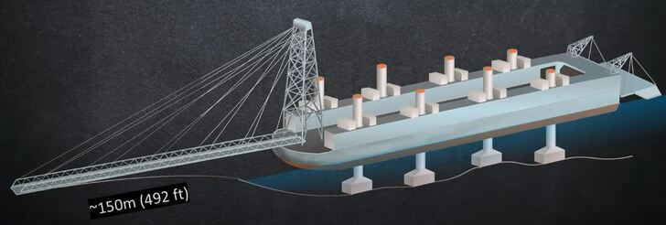
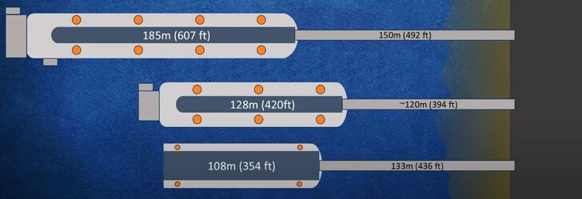
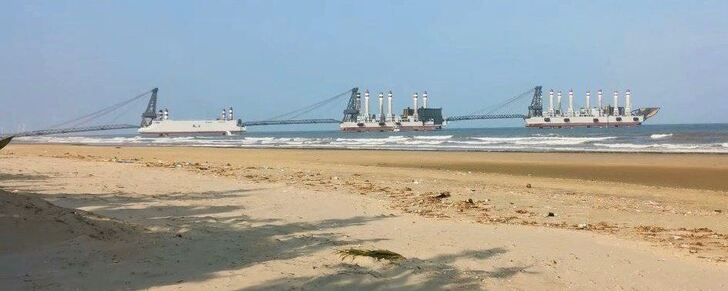

【海軍】中共海軍的兩棲攻撃艦
2014-09-03 13:40:00
原文网址：https://blog.udn.com/MengyuanWang/108908630
這個禮拜最重要的小道消息有關中共海軍的新型兩棲攻撃艦。兩棲攻撃艦依美軍的編號，分為三類：全通甲板，像艘小航空母艦的叫LHA（Landing Helicopter Assault，1970年代給第一代的Tarawa Class的稱號）或LHD（Landing Helicopter Dock，80年代給Wasp Class黃蜂級的稱號，以便和LPD和LSD協調一致；但是最新的America Class美國級又改回LHA；我猜是因為取消了船塢，不好意思再叫Dock）。非全通甲板，亦即在艦身後半有一個停機坪，還有機庫的，叫做LPD（Landing Platform Dock，又稱為Amphibious Transport Dock，兩棲運輸母艦）；美軍正在用25000噸的San Antonio Class來替換16900噸的Austin Class。只有停機坪，而沒有機庫的，叫做LSD（Landing Ship Dock）；美軍目前有16100噸的Whidbey Island Class和16700噸的Harpers Ferry Class兩種，後者是前者的小改型。 
America Class的第二艘USS Tripoli（LHA-7）的想像圖。第一艘USS America（LHA-6）於2012年下水，將於今年底前服役。因為F-35B機庫佔地比原本預期的大，所以不得不取消了船塢。計劃自第三艘起，變更設計，加回船塢。  USS San 7），年服役。和071級相比，噸位雖大，引擎反而稍弱，裝載能力也較遜色；真正的亮點在於其有利於隱身的共形天線（Conformal Antenna Array）。
USS San 7），年服役。和071級相比，噸位雖大，引擎反而稍弱，裝載能力也較遜色；真正的亮點在於其有利於隱身的共形天線（Conformal Antenna Array）。  USS. Island Class的第三艘。 Whidbey Island Class的八艘船是美國海軍現役序列中唯一能帶四艘LCAC的軍艦。
USS. Island Class的第三艘。 Whidbey Island Class的八艘船是美國海軍現役序列中唯一能帶四艘LCAC的軍艦。
目前共軍序列裡的兩棲攻撃艦只有三艘071級LPD，即2006年下水的崑崙山號，2010年下水的井岡山號，和2011年下水的長白山號。 071級滿載排水量18500公噸（請注意，1公噸=1.102噸，所以18500公噸=20400噸），可攜帶800名陸戰隊員，不過一般載員略少以騰出空間來搭載各型機械化作戰車輛。
071級LPD。艦身已經隱身處理，只差沒有共形天線。
071級的標準搭配包括四艘726型玉義級氣墊登陸艇。這些中型氣墊登陸艇的尺寸，性能和戰術運用都與美軍的LCAC（Landing Craft Air Cushion）極為相似；不過由於開發時間晚了20年，得以採用新的電子科技和人性化設計，所以精確來說， 726型基本上是中共版的LCAC 2.0，也就是計畫在2017年服役的SSC（Ship-to-Shore Connector），比現役的LCAC SLEP（Service Life Extension Program）版稍微先進一些。在戰術運用上，中型氣墊登陸艇主要用於運送登陸部隊從兩棲攻撃艦渡海上岸，所以其載重一般在70噸左右，以便一次載運一輛沒有自行泅渡能力的主戰坦克（Main Battle Tank）和一至兩個排的伴隨步兵。 071級在設計上是用來運送以一個陸戰營為核心的多兵種合成戰鬥群（美軍的叫做ARG，Amphibious Ready Group）；它的四艘登陸艇配合直升機可以在第一波次就把這個戰鬥群的第一線兵力全數送上敵岸。三艘071級加起來剛好可以搭配一個加強陸戰旅，足以滿足中型的兩棲作戰需求。 
美軍現役的SLEP版LCAC。圖中攜帶了一輛M1坦克，已經滿載了。 726型氣墊登陸艇，和LCAC的設計理念基本一致。不過從圖中可以看出其每邊的傳動軸有兩個大型變速箱，因此726型的油耗可能低於LCAC，有助於增加航程。
726型氣墊登陸艇，和LCAC的設計理念基本一致。不過從圖中可以看出其每邊的傳動軸有兩個大型變速箱，因此726型的油耗可能低於LCAC，有助於增加航程。
提起氣墊登陸艇，讀者或許聯想到中共剛從烏克蘭買到的歐洲野牛級（Zubr Class）大型氣墊船。 Zubr比LCAC大三倍，可以一次運載三輛主戰坦克和140名步兵，航速更高達65節，的確很適合橫渡台灣海峽之類的岸至岸兩棲作戰。但國軍在今年六月的漢光演習兵旗推演裡假設共軍將用Zubr做為登陸先鋒，直接突撃嘉南平原的沙灘，那就真是用外行話來哄騙外行人了。最好笑的是假設共軍會在嘉南平原登陸，那裡根本沒有任何有價值的目標；而且氣墊艇的主要優點就在於不需要沙灘也能登陸。另外氣墊登陸艇是很脆弱的裝備，運送第一攻撃波時極易受到守軍地面炮火或武裝直升機的打撃而損毀（漢光演習就安排AH-64來炸射Zubr），所以LCAC和726型基本上是半消耗品，單價不能太高。 Zubr不但太貴，不值得浪費在這種危険的任務上，而且它有一個更重要的任務，就是等第一攻撃波的兩棲部隊經過一整個白天的血戰，已經建立了穩定的灘頭陣地之後，在第一夜裡快速有效地將後續的重裝部隊送過海峽，完全省去佔領港口的需要。我個人的計算是共軍只需要20艘Zubr，就能在一夜之間把一個完整的重裝集團軍的第一線作戰裝備和兵員全部運送到台灣，而一個共軍重裝集團軍的戰力是超過整個國軍陸軍的總和的（不算武裝直升機，因為沒有空優的話，直升機只是敵方戰鬥機的靶）。不過共軍仍然保有20多艘072A級坦克登陸艦和新式的人工港口，所以也可以進行諾曼第式的登陸戰。共軍的武器發展方針一向是“兩條腿走路”，同時發展兩種不同的登陸戰能力並不意外。 
Zubr Class。大約為LCAC的兩倍長，兩倍寛，三倍重。 Zubr不是登陸艇，而是運輸艦。
新出來的小道消息是中共海軍剛剛簽了約，訂購了若干071A級LPD和型號未知的LHA。依據共軍的軍艦命名傳統，071A級應該沿用071的船身，所以排水量變化不會很大。 LPD主要的任務是運輸，其艦載武器是很簡單的，就算再怎麼換新也沒有多大的意義。當然LPD是一個兩棲攻撃群的核心，必須有很強的C4ISR（Command，Control，Communications，Computers，Intelligence，Surveillance，Reconnaissance）能力；而在過去這一年裡，共軍進行了多次兩棲攻撃演習，071級的指揮能力頗獲好評，顯然其C4ISR系統已經甚為先進，即使再有改進，也只是量變而不是質變，最有可能是學San Antonio Class改用共形天線（055級已經用上了，所以共軍顯然是有這個技術能力的）。因此綜合來看，我個人認為071A級和現役的071相比，更動幅度不大。目前的消息是071A會在2015年上船台，應該在2016年下水。考慮共軍的兩棲旅有三個陸戰營，071A的數量應該是三的倍數，可能是三艘，也可能是六艘。
2014年九月武漢船舶研究所建造的055模型，用來測試各型天線之間的相容性；這是共形天線第一次出現在共軍序列。
至於新的LHA，目前的消息是其排水量為36,000公噸，2016年上船台。中共並沒有像美軍F-35B那様的STOVL（Short Take-Off Vertical Landing，短場起飛垂直降落）戰鬥機，而STOVL需要的設備是很多的，America Class的頭兩艘甚至因此而完全沒地方放LCAC。所以共軍的LHA雖然比45,000公噸的America Class小了一號，除了戰鬥機以外，其他的功能反而會更齊全。 LHA和LPD相比，主要的功能差異在於能多帶很多架武裝直升機。如果守軍實力較強，LHA的強大空中火力就比LPD穩當許多。 36000公噸的身材，是全世界最大的純直升機LHA了。俄國向法國買的西北風級（Mistral Class）排水量只有21000公噸，相較之下，中共要建立世界級海軍的雄心壯志是很明顯的。 
Mistral Class，只有21000公噸，俄國卻也無法自建了。失去烏克蘭對俄國的軍事工業打撃很大，尤其是蘇聯的水面艦隻基本上都是在烏克蘭建的（包括Zubr和遼寧號的前身Varyag），以致俄國在蘇聯解體之後所建的最大水面艦艇只是一型護衛艦。
LHA和LPD都是在遠洋投射營級或旅級兵力的工具，和台海沒有關係，倒是很適合用於南海爭端之中。不過這些新的武器並不代表共軍即將在南海動手；中國自古講究不戰而屈人之兵，而強大的軍力是屈人的最佳手段。美國已經有數十年沒有進行過旅級以上的兩棲登陸作戰，但是至今仍然保持有三十多艘兩棲攻撃艦（LHA*1，LHD*8，LPD*10，LSD*12，總數31，目標是33）。此外兩棲攻撃艦特別適合救災之類的人道救援任務。中共的國際地位日益提高，遠洋救災是超級大國必須有的能力。
【後註一，2025/01/16】十一年前，我在這篇正文裏探討了Zubr的特性和用途，論證其為跨越臺海的第二輪常規（亦即非兩栖）重裝部隊專用載具，具備適用多種灘頭環境的優點，因此若是開始批量建造，就應該是在為戰爭做準備。然而Zubr造價昂貴，一次卻只能裝載一個戰車排進行航渡，效率甚低，必須以數量和時間來彌補。而且其極爲脆弱，對反登陸火力並無超乎民用裝備的承受力；再加上必須在戰區海域反復航行，作爲對方必然集火攻擊的目標，性價比低的問題被進一步突顯出來。以上很可能是中國海軍在多次實驗之後，始終猶豫不決、沒有下後續訂單的核心考慮。

上周網絡上出現廣州造船廠衛星照片等信息，證明中方正在建造登陸駁船。這是用途與Zubr完全重叠（亦即專門運送第二梯隊常規重裝備跨越臺海）的替代性技術路綫，參見上圖。可以明顯看出三個設計特徵：1）正前方為高强度、大跨度坡道；2）船身由自升式支柱提供很好的固定和載重性能；3）船尾為直通甲板，顯然被設計來與滾裝船對接。兼具以上三個特點的登陸駁船，並無歷史先例，是一項全新的發明。與Zubr相比，同樣可以在非傳統登陸點運作，而且其造價極低、效率卻極高，這是因爲一艘民用滾裝船就可以輕易地一次性運輸旅級的裝備，而駁船可以停在原地、反復使用。因爲其結構簡單、造價很低，還可以多點嘗試，配合終端防空反導，極難全部摧毀。目前似乎有三個尺寸的設計在被嘗試（參見下圖），等待擇優定型；一旦批量建造，如同當年博客對Zubr的評論一樣，就是積極備戰的明確信號。

【後註二，2025/03/14】兩個月前【後註一】介紹了廣州船廠所建三型全新設計的登陸駁船，本周它們在湛江市南三島的海灘（地點對應著南油伊甸園度假村，其西南7公里處即爲中國海軍兩栖氣墊登陸艇基地）進行實裝測試，被游客拍下照片和視頻上傳網絡，參見下圖、這篇網文《Our Best Look Yet At Chinas New Invasion Barges》、以及軍事博主H I Sutton的視頻《First Sighting Of Chinas Huge Invasion Barges - Quick Analysis》。

此前我已經在留言欄討論過這些駁船的串聯用法，此次剛好做了示範。請注意這三型駁船又分爲兩類：最小的四支柱型號並沒有船尾爲了與滾裝船對接的平臺，應該是專門用在海灘這頭的第一段，如上圖所示。另外兩型除了尺寸之外設計基本一致，用途重叠，所以有可能會在試用評比完成之後擇一量產。